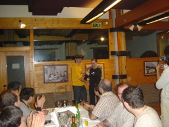
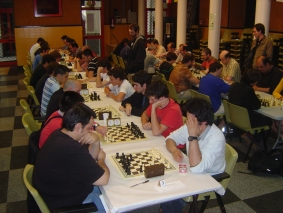
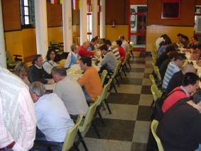
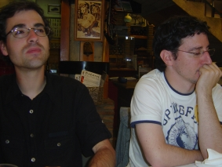

Agustin de Leitza Xake Elkartea |
| » hasiera » elkarteko bazkideak » taldekako txapelketa » azken txapelketak » loturak |
Tolosako pintxetak09-06-21Igande honetan jokatu dugu Tolosako xake elkarteak Tolosako festetan antolatzen duen pintxetako txapelketa. Gutakoak joan direnak Iosu, Claudio, Javi eta Aritz izan dira. Guztira 15 talde bildu ginen han, txapelketa jolasteko eta geroko bazkarirako, ia izkin guztietatik etorrita.  Claudiok bigarren sailkatutako saria jasotzen. Txapelketako faborito argi bat zeukan, halaber, Fomento, talde honen lehenengo 3 jokalariak ikaragarriak ziren, Agirretxe, Ofre eta Benito, eta nagusitasun hau laister ikusi zen, lehenengo txandan 4-0 irabazi baitziguten, baina emaitza engainagarria da, Claudiok galdu egin zuen final bat 2 peoi gehiagorekin eta Iosuk galdu zuen bere bestia beltzarekin, Agirretxe, nahiz eta dama irabazi oso laister. 
Fomentoko jokalari gazteena, Agirretxe, txapela jasotzen. Hala ere ez ginen behera joan eta lanari ekin genion, ez ginen hurrengo 7 txandetan 3-1tik beheratu, 4 "rosco" sartuta, eta emaitz hauekin aurreko posiziora joan ginen. Azken 6 txandak luzeegiak izan ziren guretzat eta nahiz eta ez genuen galdu txanda bat, ez genuen hainbeste goleatu. Azkenean bigarren postua lortu genuen Fomentotik lau puntura, beraz lehenengo txanda kontuan hartzen ez badugu, gainontzeko txapelketa berdindu genuen beraiekin. 

Taldeak txapelketa on bat egin du lehenengo txandaren kolpetik berregin
eta gero.Joko gelaren bista orokorra. 
Iosu y Aritz bapo geratu ostean eta sariak noiz eman behar ziren zain. |